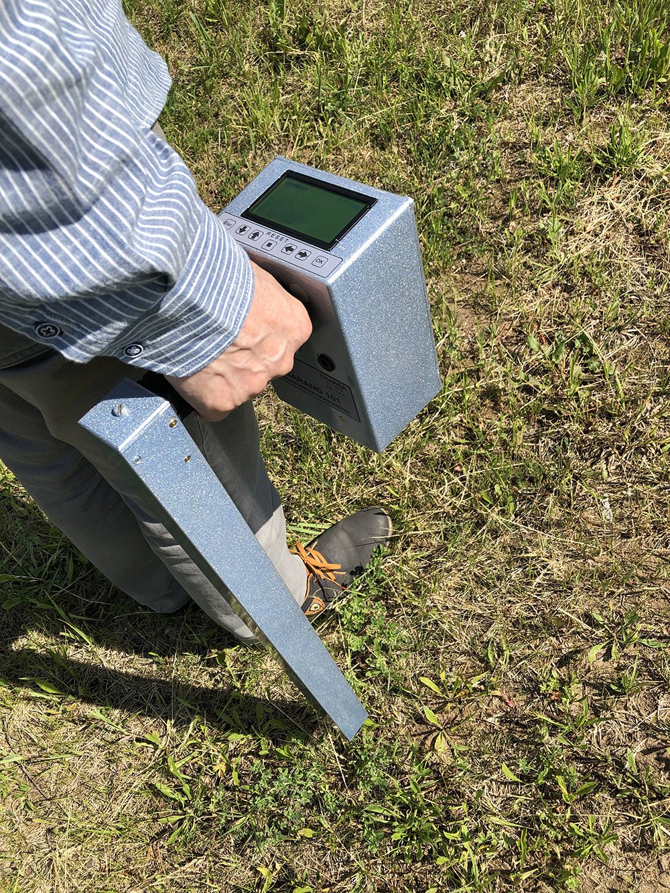
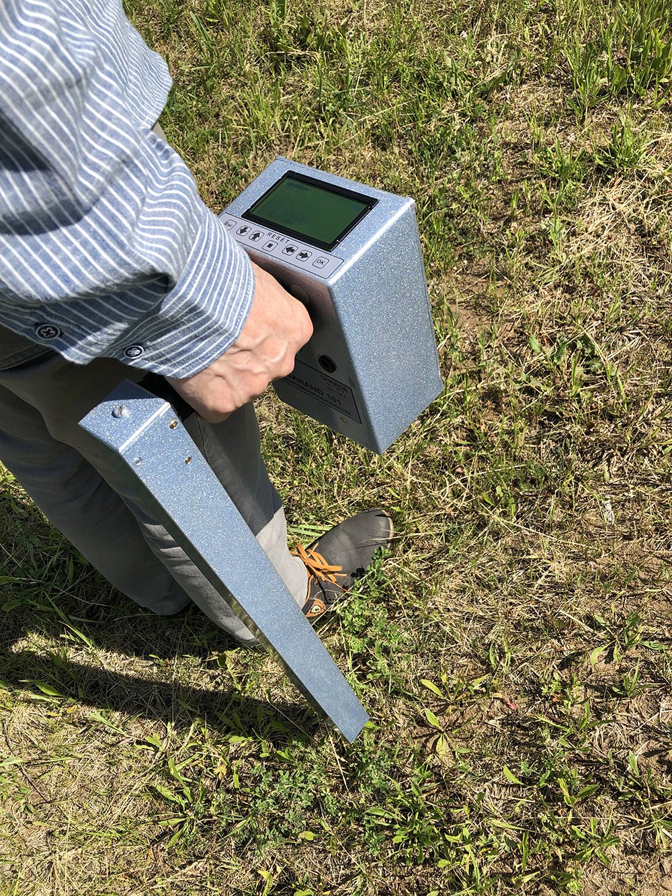

Garand 101
a high-resolution fluxgate magnetometer
Magnetic detection can be easy and convenient!
| Product presentation of Garand 101 |
Garand 101 is the high-resolution fluxgate magnetometer-gradiometer. This unit measures disruptions in the earth's magnetic field caused by ferromagnetic objects. It provides reliable detection of ferromagnetic metals such as iron, steel, and nickel. The Garand 101 is designed as an one man rapid location and identification device. This device is user-friendly and lightweight. It has significant reliability and low-price.
The target areas: archaeological purposes, environmental, forensics, geological, civil engineering and peace-time military applications.
A new magnetic field measurement technology had been proposed and practically realized in Garand 101. It allows to significantly reduce the energy consumption and device weight. Moreover, this technology of measurement simplifies construction and maintenance and increases the working time of the product.
In comparison with another magnetometers and gradiometers, Garand 101 has the following advantages:
- A new magnetic field measurement technology.
- The device is digital. It significantly increases noise stability of the magnetometer during use.
- This magnetometer has a convenient system of result visualization and user-friendly interface. Due to this, the detection of objects becomes much easier.
- It has a reliable and good solid design.
- Used design solutions expand the detection area.
- User-friendly “plug and play” system.
- The low price.
For more information about magnetometer Garand 101, please visit our website www.gradiometr.com.
Photos of Garand 101


 
